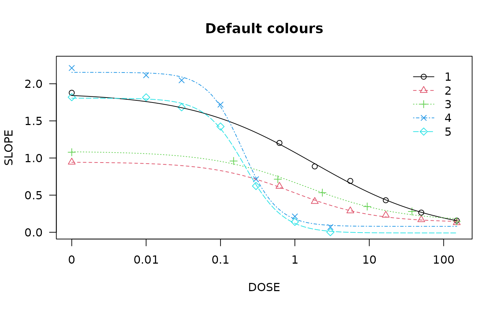
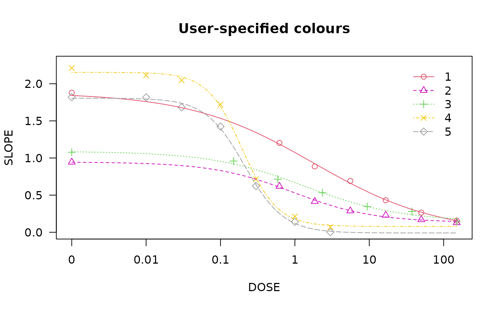

Examples_drc.Rmd
library(drcHelper)
#> Loading required package: drc
#> Loading required package: MASS
#> Loading required package: drcData
#>
#> 'drc' has been loaded.
#> Please cite R and 'drc' if used for a publication,
#> for references type 'citation()' and 'citation('drc')'.
#>
#> Attaching package: 'drc'
#> The following objects are masked from 'package:stats':
#>
#> gaussian, getInitial
library(drc)drc::ED
There are several options for calculating confidence intervals through the argument interval. The option “delta” results in asymptotical Wald-type confidence intervals (using the delta method and the normal or t-distribution depending on the type of response). The option “fls” produces (possibly skewed) confidence intervals through back-transformation from the logarithm scale (only meaningful in case the parameter in the model is log(ED50) as for the llogistic2) models. The option “tfls” is for transforming back and forth from log scale (experimental). The option “inv” results in confidence intervals obtained through inverse regression.
## Model with ED50 as a parameter
finney71.m1 <- drm(affected/total ~ dose, weights = total,
data = finney71, fct = LL.2(), type = "binomial")
summary(finney71.m1)
#>
#> Model fitted: Log-logistic (ED50 as parameter) with lower limit at 0 and upper limit at 1 (2 parms)
#>
#> Parameter estimates:
#>
#> Estimate Std. Error t-value p-value
#> b:(Intercept) -3.10363 0.38773 -8.0047 1.154e-15 ***
#> e:(Intercept) 4.82890 0.24958 19.3485 < 2.2e-16 ***
#> ---
#> Signif. codes: 0 '***' 0.001 '**' 0.01 '*' 0.05 '.' 0.1 ' ' 1
plot(finney71.m1, broken = TRUE, bp = 0.1, lwd = 2)
ED(finney71.m1, c(10, 20, 50), interval = "delta", reference = "control",type="relative")
#>
#> Estimated effective doses
#>
#> Estimate Std. Error Lower Upper
#> e:1:10 2.37896 0.25164 1.88576 2.87217
#> e:1:20 3.08932 0.24372 2.61163 3.56700
#> e:1:50 4.82890 0.24958 4.33974 5.31806
## ED(finney71.m1, c(10, 20, 50), interval = "delta", reference = "control",type="absolute")
## ED(finney71.m1, c(10, 20, 50), interval = "delta", reference = "upper")
ED(finney71.m1, c(10, 20, 50), interval = "inv", reference = "control",type="relative")
#>
#> Estimated effective doses
#>
#> Estimate Lower Upper
#> e:1:10 2.3790 1.9651 2.9207
#> e:1:20 3.0893 2.6432 3.5706
#> e:1:50 4.8289 4.3497 5.3408
## Fitting 4-parameter log-logistic model
ryegrass.m1 <- drm(ryegrass, fct = LL.4())
## Calculating EC/ED values
## Also displaying 95% confidence intervals
ED(ryegrass.m1, c(10, 50, 90), interval = "delta")
#>
#> Estimated effective doses
#>
#> Estimate Std. Error Lower Upper
#> e:1:10 1.46371 0.18677 1.07411 1.85330
#> e:1:50 3.05795 0.18573 2.67053 3.44538
#> e:1:90 6.38864 0.84510 4.62580 8.15148
plot(ryegrass.m1,broken = TRUE)
plot(ryegrass.m1, broken = TRUE, type="confidence", add=TRUE)
## Fitting the Brain-Cousens model
lettuce.m1 <- drm(weight ~ conc,
data = lettuce, fct = BC.4())
plot(lettuce.m1,confidence.level = 0.95)
### Calculating ED[-10]
# This does not work
#ED(lettuce.m1, -10)
## Now it does work
ED(lettuce.m1, c(-10,-20), bound = FALSE) # works
#>
#> Estimated effective doses
#>
#> Estimate Std. Error
#> e:1:-10 1.86458 1.01634
#> e:1:-20 0.96333 1.23014
### Using a different break point.
par(mfrow = c(2, 2))
plot(lettuce.m1, main = "bp = default") # using the default
plot(lettuce.m1, bp = 1e-4, main = "bp = 1e-4")
plot(lettuce.m1, bp = 1e-6, main = "bp = 1e-6")
plot(lettuce.m1, bp = 1e-8, main = "bp = 1e-8")
## Fitting model to be plotted below
spinach.m1 <- drm(SLOPE~DOSE, CURVE, data = spinach, fct = LL.4())
## Plot with no colours
plot(spinach.m1, main = "Different line types (default)")
## Plot with default colours
plot(spinach.m1, col = TRUE, main = "Default colours")
## Plot with specified colours
plot(spinach.m1, col = c(2,6,3,23,56), main = "User-specified colours")